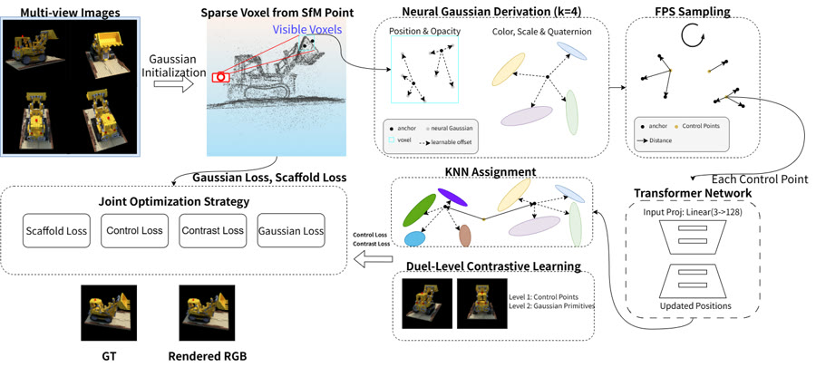
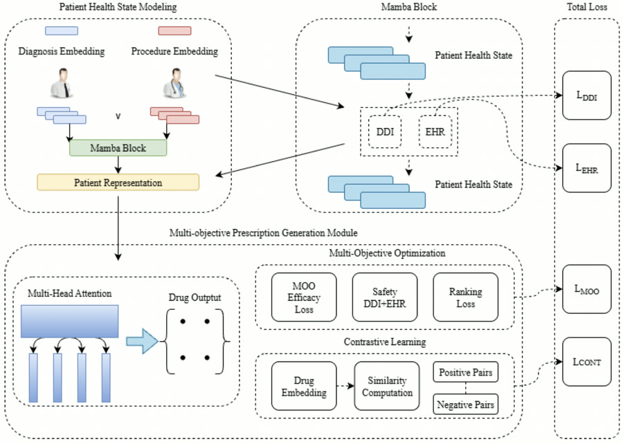

Current2026 –
Vision-language models for medical imaging
Recently I've been working on vision-language models in the medical domain, looking at how to make their answers more reliable.
Sc.M. student, Electrical & Computer Engineering · Brown University
I work on helping machines see and reason about the visual world: 3D scene representations (Gaussian Splatting), generative models for human–object interaction, and, most recently, vision-language models for medical imaging.
Open to research collaborationRecently I've been working on vision-language models in the medical domain, looking at how to make their answers more reliable.
Text-driven 3D human–object interaction synthesis
Parallel RetNet branches with bidirectional cross-retention between human and object trajectories, replacing the Transformers in HOI-Diff.
Code →
Sparse control-guided Gaussian Splatting
Sparse control points refined by a small Transformer give Scaffold-GS explicit structure, with dual-level contrastive learning for multi-view consistency.
Code →
Multi-objective safe drug recommendation
A state-space model over longitudinal patient records, with drug–drug interaction constraints and contrastive drug embeddings.
Code →I'm actively looking for research collaborations. If you work on any of these, I'd love to chat:
Students, PhDs, faculty and industry researchers are all welcome.
MUSIC
I love playing guitar and piano.
PIBBO
A tiny desktop pet I built that barely uses any memory. Meet Pibbo →
SPORTS
Football, badminton and basketball whenever I can.